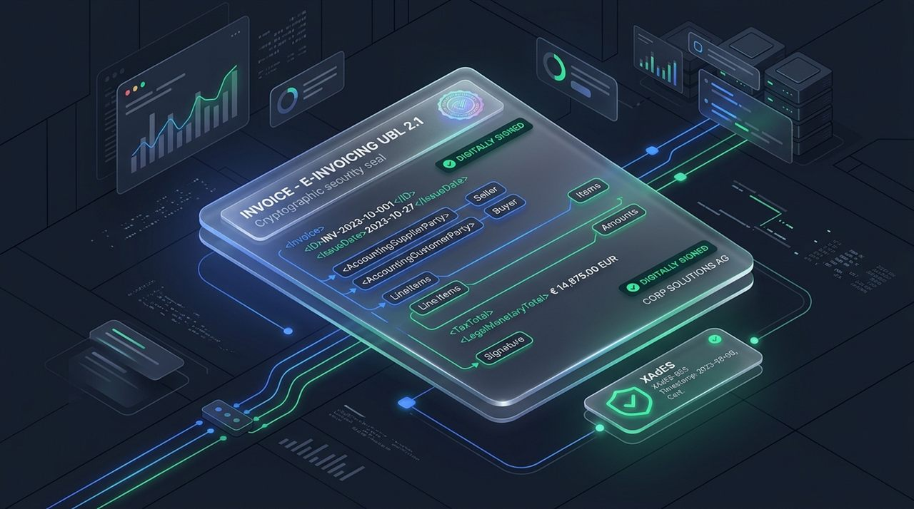
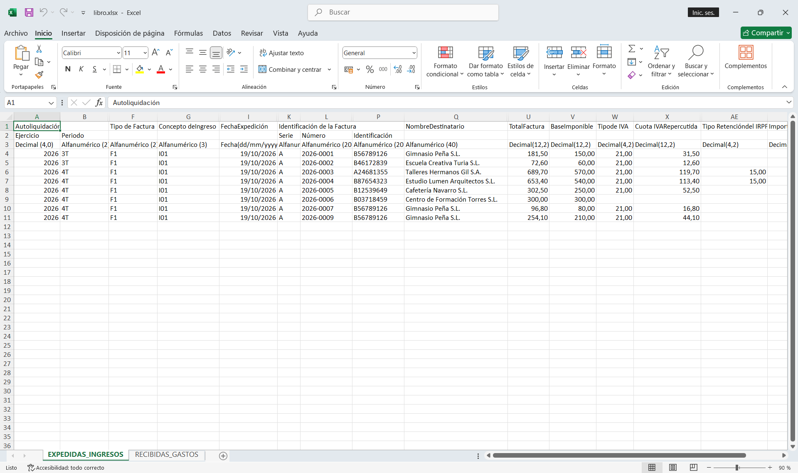
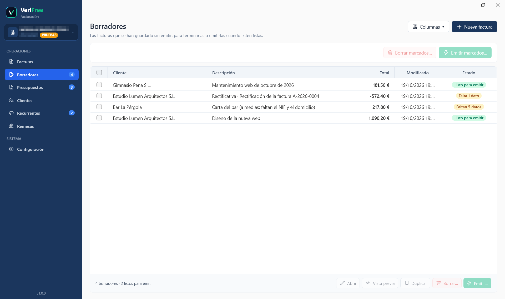
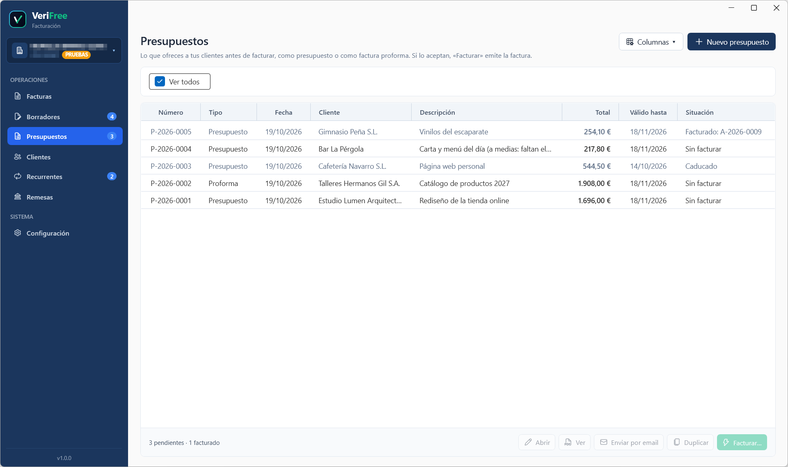
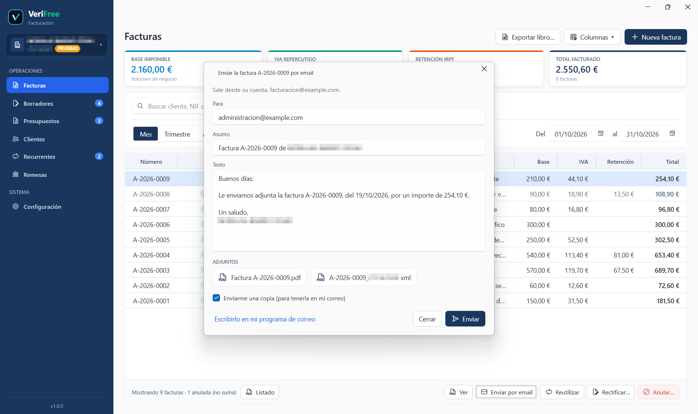
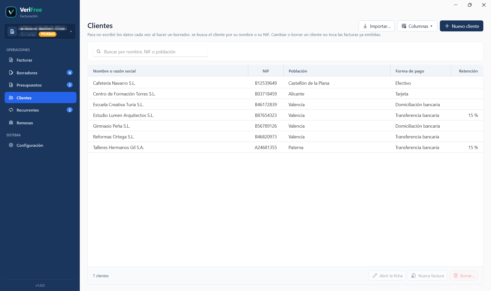
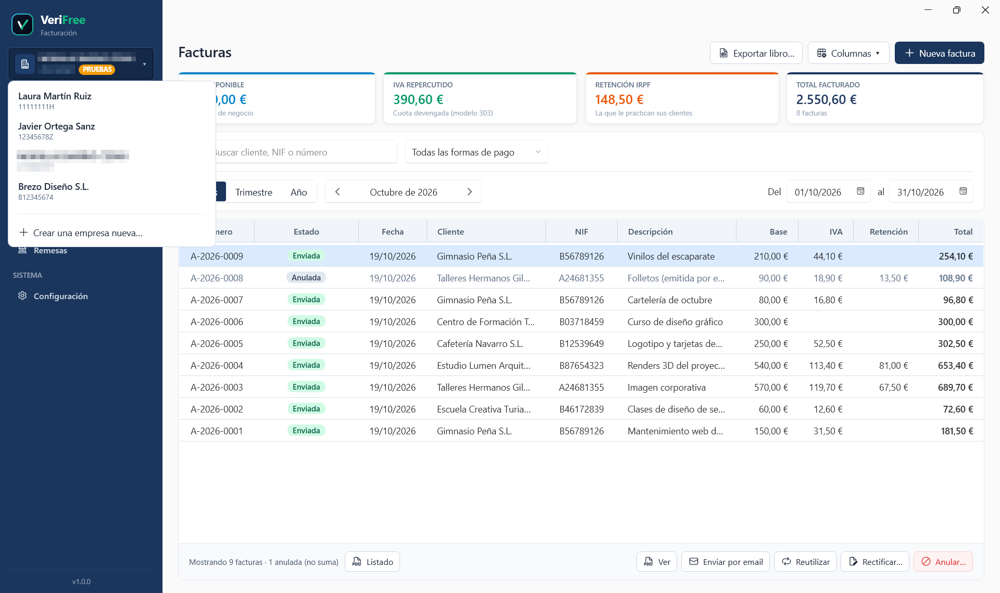
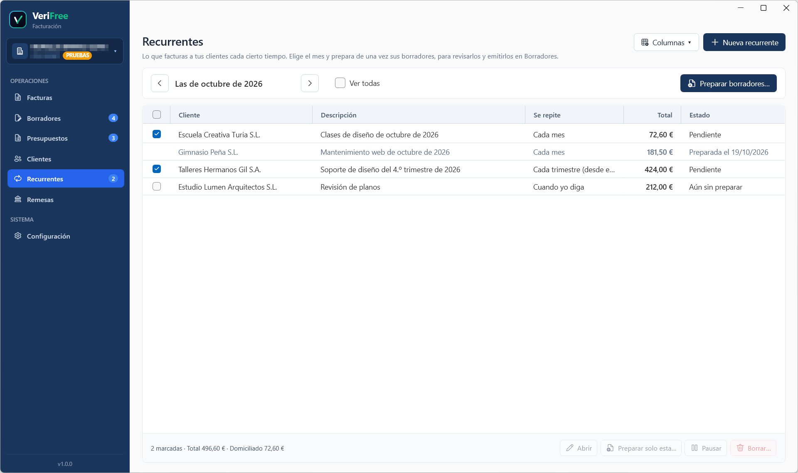
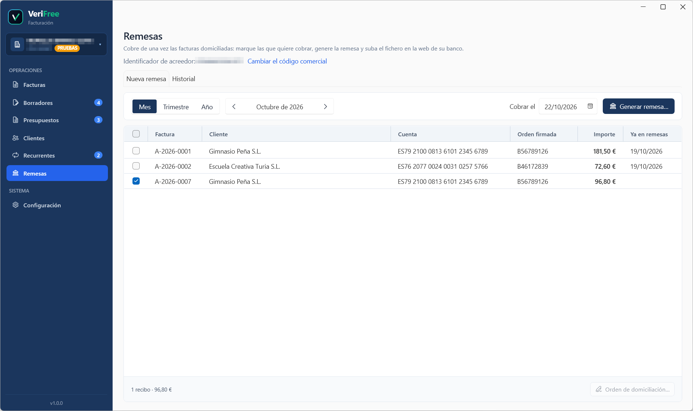

Remisión automática VERI*FACTU a la AEAT
Emites la factura y VeriFree la envía sola a Hacienda con tu certificado, encadenada a la anterior para que nadie pueda tocarla después. Lo mismo con rectificativas y anulaciones. ¿Se cae internet o la AEAT va lenta? Lo reintenta solo y te avisa de lo que queda pendiente.

Factura electrónica estructurada
Cada factura genera su versión electrónica en el formato de la AEAT (Orden HAC/1028/2026: UBL 2.1, el estándar europeo, con firma digital XAdES), el que usará la plataforma pública de la AEAT para entregar las facturas entre empresas y autónomos cuando la Ley Crea y Crece las haga obligatorias. Ya está preparada para entonces: se firma en segundo plano con tu certificado mientras sigues trabajando y se archiva en una carpeta, por año y mes, y el envío por esa plataforma llegará en cuanto la AEAT la ponga en marcha.

Libro registro oficial en Excel
Un clic y tienes el libro registro de facturas expedidas en el formato de la AEAT: un Excel con el IVA y el IRPF, listo para mandárselo a tu asesoría.

Borradores y vista previa
Prepara la factura con calma y guárdala como borrador hasta que esté bien: mientras escribes, VeriFree te dice qué falta para emitirla y la vista previa te enseña cómo quedará, marcada como documento interno. Varios borradores listos se emiten de una vez.

Presupuestos y facturas proforma
Haz el presupuesto o la factura proforma con su número (P-2026-0001) y su fecha de validez, y mándalo en PDF por email. Si el cliente acepta, «Facturar» emite la factura directamente y la deja ligada al presupuesto, que se conserva como recomienda la AEAT.

Envío por email
Manda cada factura o presupuesto a tu cliente con un clic, desde tu propia cuenta de correo, con el PDF adjunto (y, en las facturas, también la factura electrónica) y el texto de tu plantilla. ¿Prefieres tu programa de correo? VeriFree te prepara el mensaje para enviarlo desde allí.

Agenda de clientes
Guarda tus clientes con sus datos, su forma de pago y su retención, o tráetelos de golpe desde el Excel o el CSV que exporta tu programa anterior. Al preparar una factura, buscas al cliente por su nombre o su NIF y se rellena solo. Cambiar un cliente nunca toca las facturas ya emitidas.

Multiempresa ilimitada
¿Llevas varias empresas o autónomos? Todos en el mismo programa, cada uno con sus datos, su numeración y su configuración, sin mezclarse.

Facturas recurrentes
Guarda lo que facturas cada mes, trimestre o año (o cuando tú digas), con su cliente, sus líneas y su vencimiento; la descripción se completa sola con el periodo («Mantenimiento de octubre de 2026»). Cuando toca, VeriFree prepara de una vez los borradores de todas para que los revises y los emitas, y recuerda qué meses ya preparó para que ninguna se duplique.

Remesas de adeudos SEPA
Marca las facturas domiciliadas y genera el fichero de adeudos directos SEPA (pain.008.001.08, según la guía de la banca española) para subirlo a tu banco, con su listado en PDF. Guarda la orden de domiciliación de cada cliente, con su referencia y su fecha de firma (y te da el modelo para que la firme), y el historial de las remesas en las que ha ido cada factura.

 Código QR oficial de cotejo
Código QR oficial de cotejo